NÚCLEO CUMANÁ
Formación musical de excelencia en el corazón de Sucre.
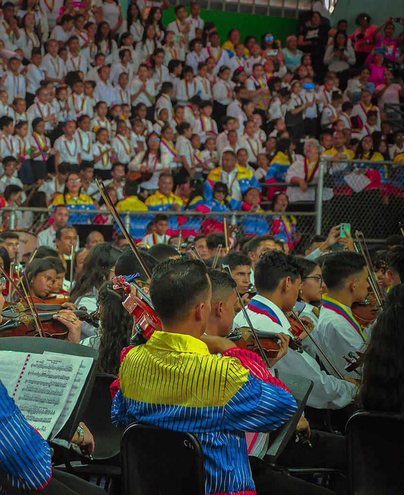
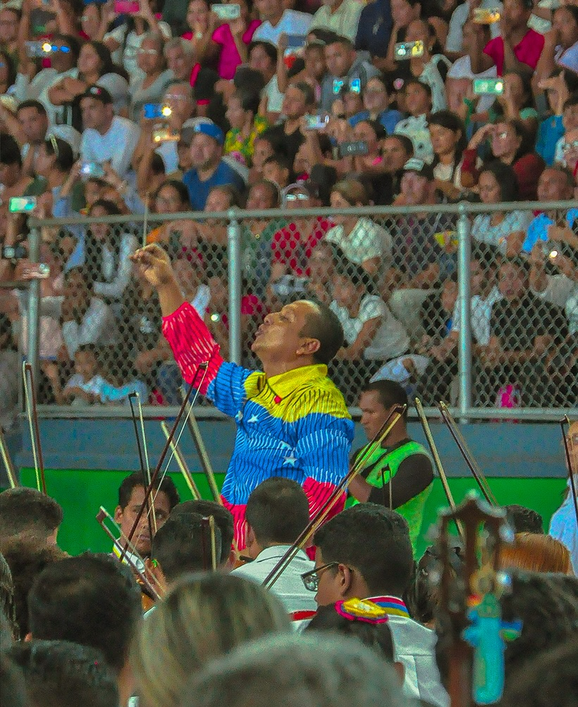
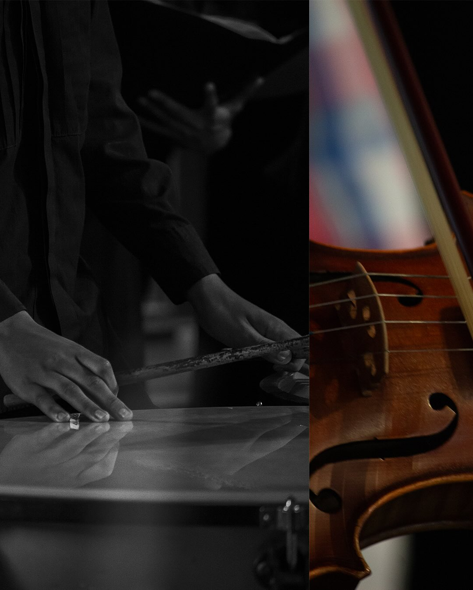
GALERÍA
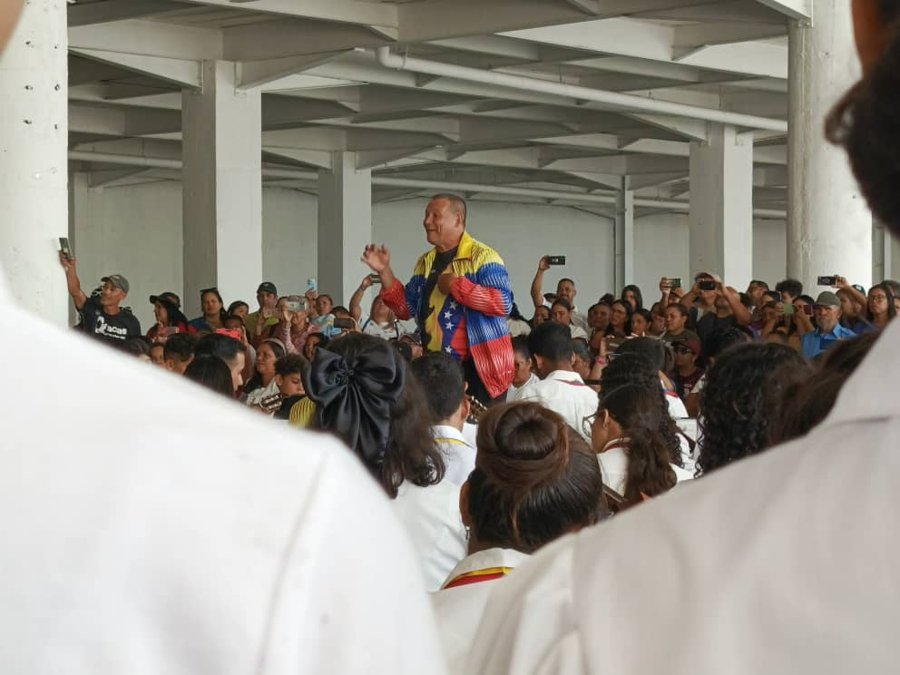
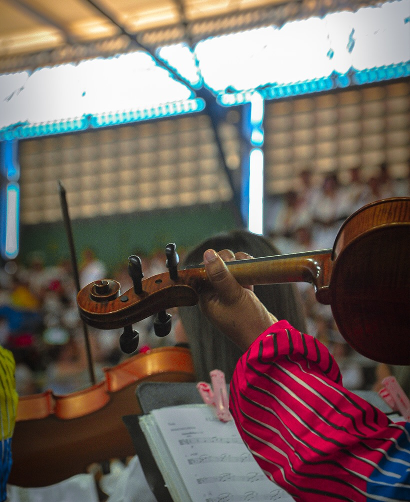
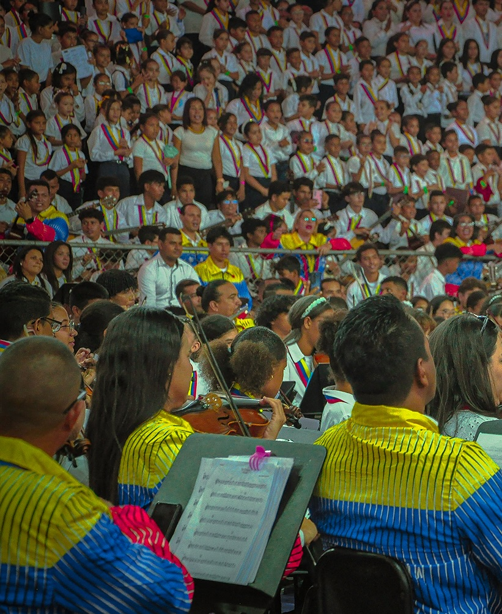
TRÁMITES Y ADMISIÓN
Requisitos de Inscripción
Para formalizar tu inscripción en el Núcleo Cumaná, debes presentar los siguientes documentos en nuestra oficina:
Copia de cédula vigente del alumno y del representante (si es menor de edad).
Foto tipo carnet del alumno y representante.
RIF actualizado del representante.
Carta de residencia emitida por el consejo comunal.
HISTORIA
Impulsados por la visión del Mtro. Dr. José Antonio Abreu y guiados por la batuta del Mtro. Pastor Suárez, la alegría de la música llegó a las riberas del río Manzanares, esparciéndose por toda Cumaná para transformar vidas y construir un futuro de excelencia.
Los Primeros Acordes
El Mtro. José Antonio Abreu reúne a 150 aspirantes en el Palacio Episcopal de Cumaná, seleccionando a diez talentosos músicos para formarlos como los primeros guías de enseñanza del Estado Sucre.
Fundación del Núcleo
Abre sus puertas el primer núcleo del Estado Sucre en la casa natal del poeta José Antonio Ramos Sucre, bajo la dirección fundadora del Mtro. Pastor Suárez.
Nace la Orquesta Infantil
El núcleo se expande con la creación de la Orquesta Infantil, sembrando la semilla de la música en las nuevas generaciones, bajo la dirección del Prof. Johnny Potella.
Un Legado en Crecimiento
Bajo la dirección del Maestro Johnny Potella Williams, el Núcleo Cumaná alberga a más de 1.078 niños y jóvenes, proyectándose hacia nuevas iniciativas de rescate social.
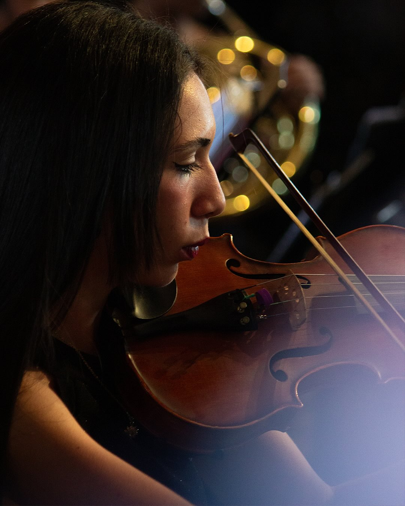
Nuestra Misión
El Sistema Nacional de Orquestas y Coros Juveniles e Infantiles de Venezuela constituye una obra social del Estado Venezolano consagrada al rescate pedagógico, ocupacional y ético de la infancia y la juventud, mediante la instrucción y la práctica colectiva de la música, dedicada a la capacitación, prevención y recuperación de los grupos más vulnerables del país, tanto por sus características etárias como por su situación socioeconómica.
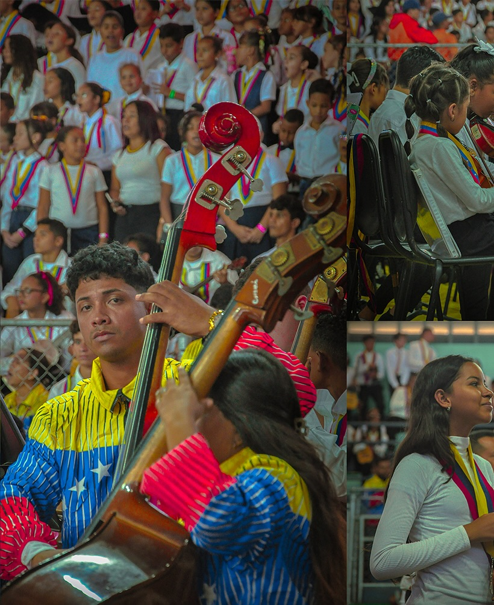
Nuestra Visión
El Sistema Nacional de Orquestas y Coros Juveniles e Infantiles de Venezuela es una institución abierta a toda la sociedad, con un alto concepto de excelencia musical, que contribuye al desarrollo integral del ser humano. Se vincula con la comunidad a través del intercambio, la cooperación y el cultivo de valores transcendentales que inciden en la transformación del niño, el joven y el entorno familiar. Se cuenta con un recurso humano dirigido al logro de una meta común, con mística y gozo, formando equipos multidisciplinarios altamente motivados e identificados con la Institución.
Se reconoce al movimiento orquestal como una oportunidad para el desarrollo personal en lo intelectual, en lo espiritual, en lo social y en lo profesional, rescatando al niño y al joven de una juventud vacía, desorientada y desviada.
PROGRAMAS
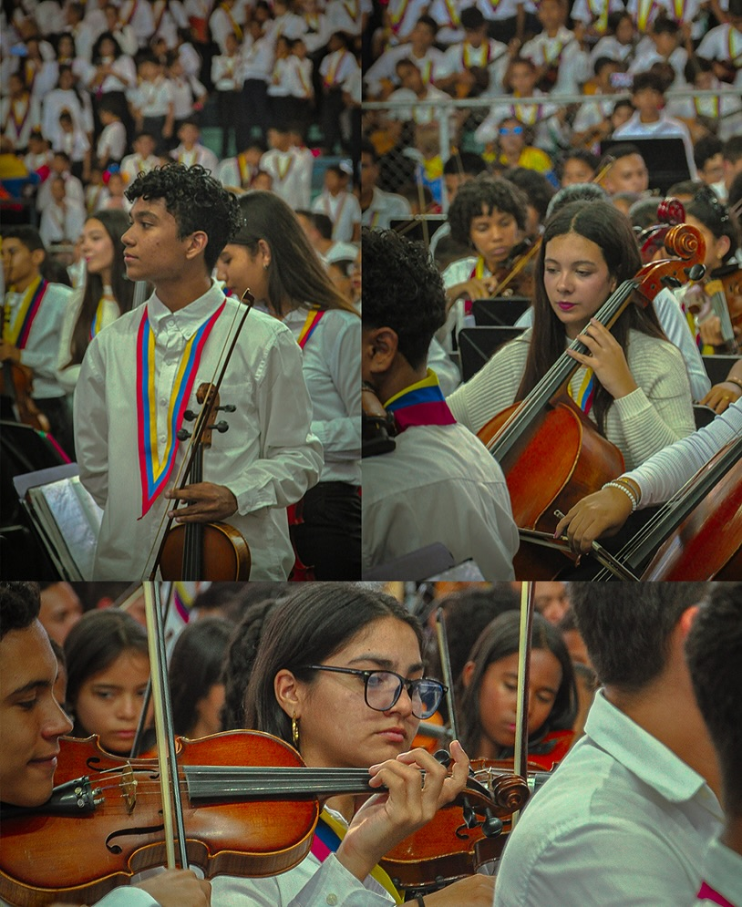
Programa Académico Orquestal

Programa de Iniciación Musical

Programa de Educación Especial
Programa Académico Coral

Programa Alma Llanera

Programa Simón Bolívar

Programa de Música Popular y otros Géneros
Programa Académico Orquestal
Basado en un proceso de enseñanza-aprendizaje de la práctica colectiva e individual de la música, está dirigido a niños y jóvenes guiados por docentes y directores que, además de enseñar música, forman a sus estudiantes de manera integral con principios de igualdad, respeto, solidaridad, compromiso, responsabilidad, trabajo en equipo y cultura de paz.
Programa de Iniciación Musical
Este programa favorece el acercamiento directo de niños, jóvenes y adultos al mundo orquestal y coral, respetando su fase cognitivo-emocional y contribuyendo con su desarrollo de manera integral.
Programa de Educación Especial
Componente Académico Organizacional de El Sistema Nacional de Orquestas y Coros Juveniles e Infantiles de Venezuela “El Sistema”, que enmarcado en su modelo máximo de Inclusión, Participación y Rescate Social, promueve el desarrollo sistemático y permanente de la “Práctica Orquestal y Coral” de los niños y jóvenes con necesidades educativas especiales y/o discapacidad, a través de estructuras y mecanismos académicos de formación, fundamentados en los principios metodológicos de la “Práctica Colectiva de la Música”.
Programa Académico Coral
Tras el reconocimiento de la tradición de la práctica coral en el país y el fácil acceso en las comunidades, escuelas e instituciones, El Sistema impulsa la creación del Programa Académico Coral; promoviendo la incorporación de niños y jóvenes que, usando la voz como instrumento, se les abre una gama de posibilidades de desarrollo individual y colectivo, contribuyendo con su crecimiento artístico, humanístico e intelectual.
Programa Alma Llanera
Este programa enaltece los valores culturales autóctonos del país y da a conocer las costumbres propias de las regiones, por medio de la ejecución de instrumentos típicos. Cuenta con la valiosa participación de cultores que, junto a los docentes de El Sistema, profundizan en las estrategias de enseñanza-aprendizaje de la música venezolana, lectura de partituras y promoción del enorme bagaje cultural con el que cuenta nuestra nación.
Programa Simón Bolívar
Con el objetivo de masificar el milagro de la música y expandir el impacto social de El Sistema, en 2015 nació este programa dirigido principalmente a fomentar la práctica colectiva de la música en las escuelas pertenecientes al subsistema de educación básica de nuestro país, con el propósito de que esta población aprenda las bondades de la música y los valores que se desprenden de ella.
Programa de Música Popular y otros Géneros
Este es uno de los grandes alcances desde el punto de vista musical y académico de la institución, al ofrecer expansión y proyección a una amplia gama de ritmos y géneros. Contribuye con la consolidación de bandas de jazz, rock sinfónico, música afroamericana, latinoamericana y caribeña.

NUESTRO TALENTO
AGRUPACIONES
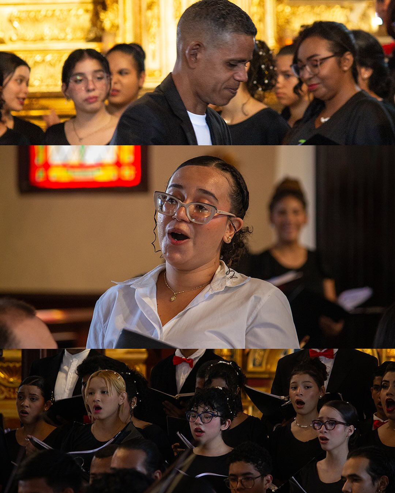
ORQUESTA SINFÓNICA PRE INFANTIL
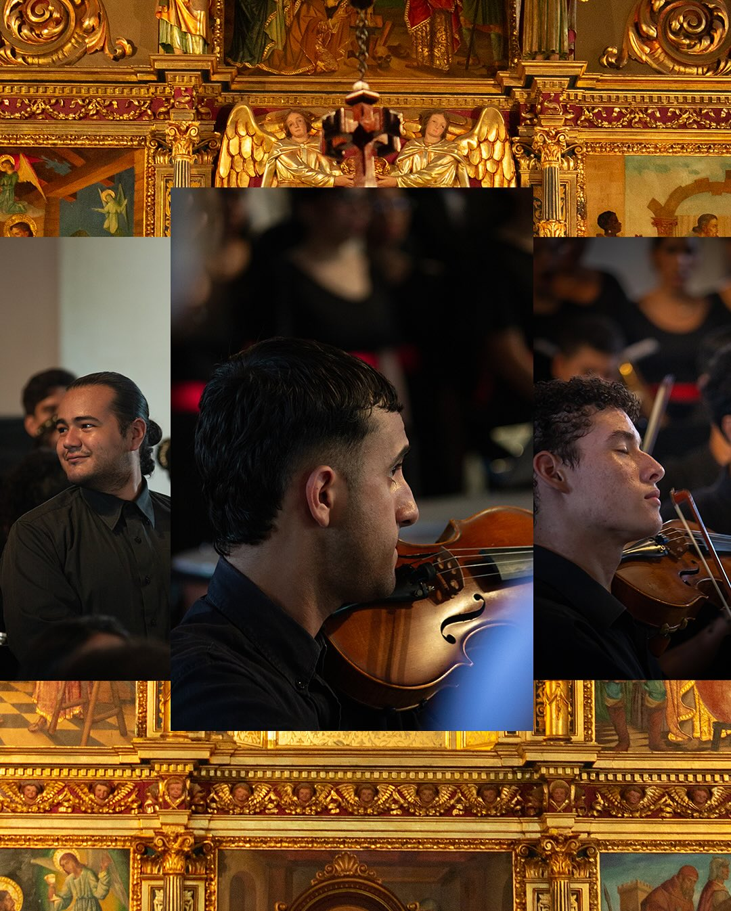
ORQUESTA SINFÓNICA INFANTIL
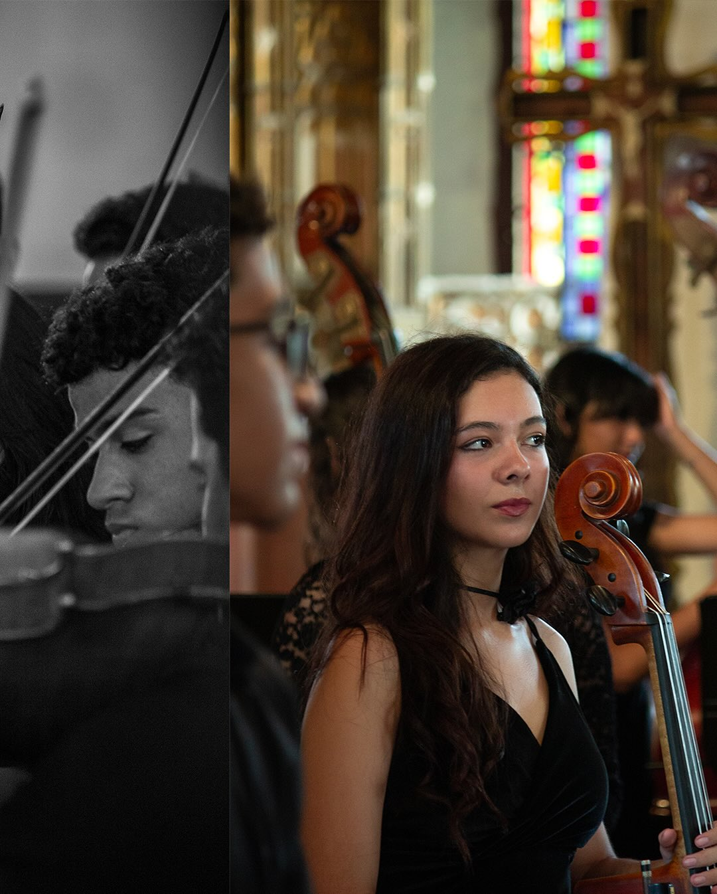
ORQUESTA SINFÓNICA JUVENIL
CORO SINFÓNICO: MIRIAM WILLIAMS
CORO SINFÓNICO: LUIS EDUARDO JIMÉNEZL
CORO FIAM
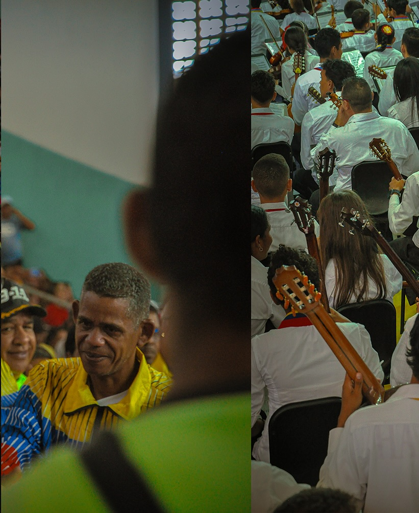
ORQUESTA ALMA LLANERA: MOROCHITO FUENTES
ORQUESTA ALMA LLANERA: MARIA RODRIGUEZ
DIRECCIÓN Y CONTACTO
Ubicación
Concha Acústica del Parque Guaiquerí, Cumaná - Estado Sucre.
Teléfono
+58 293 123 4567
Lunes a Viernes, 8am - 5pm
Correo
info@nucleocumana.org